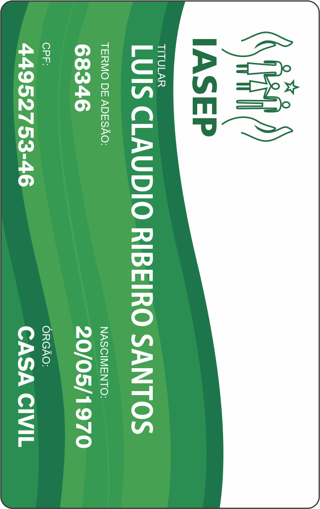

<ion-view title="Carteira Virtual">
      <ion-content class="padding">
          <!--<div style="background: url(img/cartao_frente.png) no-repeat center center fixed; -webkit-background-size: cover; -moz-background-size: cover; -o-background-size: cover; background-size: cover;"></div>-->
          
      </ion-content>
  </ion-view>
